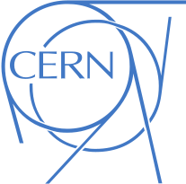
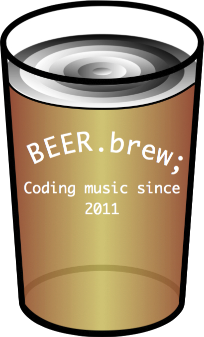
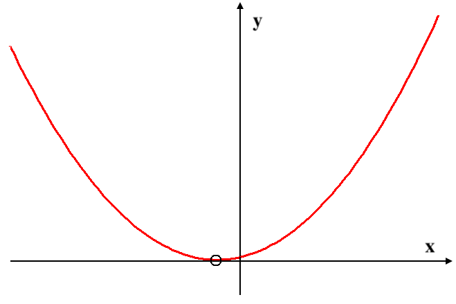
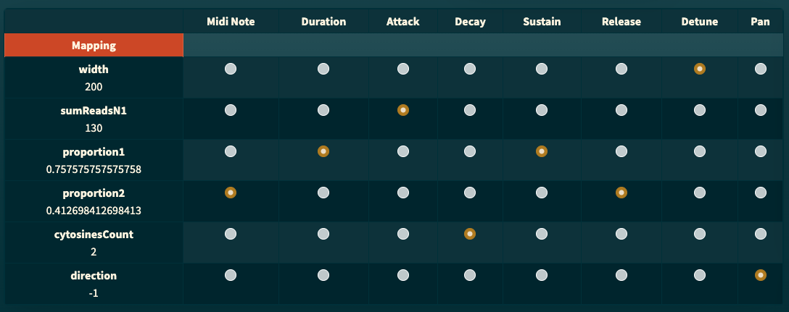
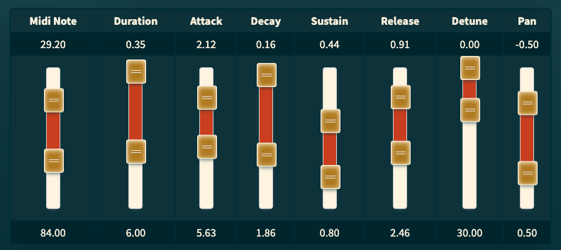

EN
ES
English
Español
# <div style="text-align: center" data-i18n="title">Sounding the Epigenome</div> ## <div style="text-align: center;color: #3b89fd" data-i18n="subtitle"><strong>Interactive Epigenetic Sonification System</strong></div> <!-- Link to the app here--> ### <div data-i18n="describe">This <a href="https://beast.cal.bham.ac.uk/sounding/index.html" style="text-align: center; color:#d1a727" target="_blank">App</a> is an online platform where anyone can sonify epigenetic data taken from the English Oak tree!</div> <br> <br> <div data-i18n="navinstructions"style="text-align: center; font-size: clamp(1.35rem, 1vw, 2rem);">Click on the down arrow at the bottom-right corner of the screen <br><br> or <br><br> Press the DOWN arrow key on your keyboard</div>
THIS VIDEO NEEDS TO BE CHANGED! <br> <video class="stretch" controls data-autoplay src="media/IPSOS_demo_video.mp4" style="background:none; border:none; box-shadow:none; width: clamp(500px, 55vw, 100vw); max-width: 100%; height:auto;" title="IPSOS app"><em>Oops! Sorry, it seems your browser is old! Try updating or using a different one to play this video.</em></video> <figcaption style="text-align: center; opacity:0.5; font-size:0.5em;">TURN YOUR SOUND ON!</figcaption> <br> <!-- Link to the app here --> <div data-i18n="discussion" style="text-align: center; font-size: clamp(1.35rem, 1vw, 2rem);">The <a href="https://beast.cal.bham.ac.uk/sounding/index.html" style="color:#d1a727" target="_blank">Sounding the Epigenome App</a> was developed as part of a collaboration between the University of Birmingham, MEMBRA Treescape project, Universidad de los Andes and Centro Nacional de Las Artes (Bogota, Columbia). This project utilises the practise of data sonification to bring awareness to and engagement with science. Through workshops and activities supporting the creation of bespoke tools and resources, it will create impact for a variety of users, including artists, educators, the science interested public, and the visually-impaired.<br><br> Here you can explore and play! The website also holds information on the science of Epigenetics, Data Sonification and Sound Synthesis, if you would like to discover more about the theory behind the app. <br><br><br> Use the UP/DOWN buttons on your keyboard or at the bottom-right corner of the screen to navigate between sections within a topic. Use the RIGHT/LEFT buttons to navigate between topics. Use the menu button at the bottom-left corner of the screen to access any of the resources. </div> <p style="text-align: center; font-size: clamp(1.35rem, 1vw, 2rem);"> <br><br> <a href="#/instructions" ><strong><em data-i18n="instructions">Click here for detailed instructions on how to use the app!</em></strong></a></p>
<div data-i18n="creditsinner" style="font-size: clamp(1.35rem, 1vw, 2rem);"><strong>Sounding the Epigenome project is a collaboration between:</strong> <br> The University of Birmingham <br> Universidad de los Andes <br> MEMBRA <br> BEAST / The Centre for Electronic Music <br> Centro Nacional de Las Artes <br> It builds upon research undertaken for the <a href="https://www.birmingham.ac.uk/index.aspx">IPSOS project</a> (the Interactive Physics Sonification System) undertaken with the <a href="http://artcms.web.cern.ch/artcms/dark-matter-music-meets-physics/">art@CMS</a> project. <br> ---- <br> <strong>Team members:</strong> <br> Dr. Joe He (Bioinformatician) <br> Dr. Marco Catoni (Bioinformatician) <br> Prof. Santiago Lozano (Composer) <br> Prof. Jorge Gregorio García (Composer) <br> Prof. Scott Wilson (Composer/Programmer) <br> Dr. Milad Mardakheh (Composer/Programmer) <br> Dr. Konstantinos Vasilakos (IPSOS) (Composer/Programmer) <br> Dr. Tom McCauley (IPSOS) (Physicist/Programmer) </div> ---- <br> <p style="text-align: center"> <a href="https://www.birmingham.ac.uk/index.aspx" style="margin-right:62px;" id="uob" target="_blank"></a> <a href="https://beast.cal.bham.ac.uk/" id="beast" target="_blank"></a> <a href="https://membra.info/" id="membra" target="_blank"></a> <a href="https://uniandes.edu.co/" id="membra" target="_blank"></a> </p> <p style="text-align: center"> <a href="https://home.cern/" style="margin-right:140px" id="cern" target="_blank"></a> <a href="http://www.beast.bham.ac.uk/offspring/beer/" style="margin-right:130px" id="beer" target="_blank"></a> <a href="http://artcms.web.cern.ch/artcms/dark-matter-music-meets-physics/" id="artcms" target="_blank"></a> </p>
# <div data-i18n="epigenetics">Epigenetics</div>
## <div data-i18n="whatisit">What is it?</div> <br> <table style="border: 0px; text-align: center; width: clamp(470px, 75vw, 100vw);"> <tr> <td style="text-align: center;"> <img src="https://upload.wikimedia.org/wikipedia/commons/7/72/Royal_Oak_Tree.jpg" style="background:none; border:none; box-shadow:none; width: clamp(1000px, 55vw, 100vw); max-width: 100%; height: auto;" title="En Oak"> <figcaption style="text-align: center; opacity:0.5; font-size:0.5em;"> <em>Image: Wikimedia Commons: RegalShave</em></figcaption> </td> <td style="width: 10px"></td> <td style="text-align: center;"> <img src="https://upload.wikimedia.org/wikipedia/commons/1/18/English_Oak_%28Quercus_robur%29%2C_acorn_%2819859270890%29.jpg" style="background:none; border:none; box-shadow:none; width: clamp(800px, 45vw, 100vw); max-width: 100%; height: auto;" title="En Oak"> <figcaption style="text-align: center; opacity:0.5; font-size:0.5em;"> <em>Image: Wikimedia Commons: AnemoneProjectors</em></figcaption> </td> </tr> </table> <br> <div data-i18n="epigen-discuss" style="font-size: clamp(1.35rem, 1vw, 2rem); text-align: left;">What makes an oak tree an oak tree? Is it the boughs or the leaves? The roots deep underground? For sure the unique shape of the leaves and their majestic stature are incomparable, but in recent years, biologists have turned more to examining the DNA of living things to distinguish between different species and to classify them. Every living thing has a DNA code, which is comprised of 4 nucleotides, referred to by the initials of their name; A, C, T, and G. This code is responsible for instructing the cell on what proteins to make, how to make it and when to make it, which ultimately make up the organism. By looking at this code, biologists can group similar organisms into species, families, kingdoms and domains. DNA is inherited by offspring from parents, which is why children often resemble parents, whether you are a human, cat, fish or oak. But recent evidence shows that modifications in the DNA that are not the primary sequence, termed called epigenetics, has significant effects on the characteristics of the organism. For instance, tortoise shell cats are the daughters of a black and orange cat. The colour patches are caused from expression of the black and orange portions from each parent, making a tortoiseshell cat a real-life chimera! We study the epigenome of forest trees in the UK and Colombia. The epigenome is affected by environmental conditions associated with climate change such as frost, drought, insect infestation and elevated CO2. We used the latest technique, whole genome bisulphite sequencing, to identify the pattern of the epigenome. After sequencing, we associate the changes traits to different epigenomic marks to better understand the trees. For example, if a particular region of the epigenome is associated with disease resistance, then tracking its prevalence in a population will help us understand how resistant a forest may be to disease. This is an active science project that is ongoing. The epigenome sequence through various stages of processing is available for you to sonify in this app.</div> <br>
# <div data-i18n="synthesis">Sound Synthesis</div>
<div data-i18n="synthesis-discussion" style="font-size: clamp(1.35rem, 1vw, 2rem);"> <p style="text-align: center"> <img src="https://upload.wikimedia.org/wikipedia/commons/f/ff/Moog_One_Synthesizer.jpg" style="background:none; border:none; box-shadow:none; width: clamp(500px, 45vw, 85vw); max-width:100%;" title="Synthesizer"> <figcaption style="text-align: center; opacity:0.5; font-size:0.5em;"> <em>Image: Wikimedia Commons: Qwave</em></figcaption> </p> <br> Sound synthesis is the technique of generating sound, using electronic hardware or software, from scratch. The most common use of synthesis is musical, where electronic instruments called synthesizers are used in the performance and recording of music. Sound is the perceived vibration (oscillation) of air resulting from the vibration of a sound source. We can describe such regular (periodic) vibration in terms of the sum of simpler vibrations (harmonics). Periodic oscillation and hence resulting waveform can be described in terms of the sum of its harmonics. Each harmonic being a simple sine wave (often called a pure tone) with its own respective frequency and amplitude. <br> <p style="text-align: center"> <img src="https://upload.wikimedia.org/wikipedia/commons/4/44/Simple_harmonic_motion.png" style="background:none; border:none; box-shadow:none; width: clamp(400px, 30vw, 70vw); max-width:100%;" title="Simple harmonic motion"> <figcaption style="text-align: center; opacity:0.5; font-size:0.5em;"> <em>Image: Wikimedia Commons: Maksim</em></figcaption> </p> <br> This oscillator creates sound through looping this waveform at a particular frequency. The shape of its waveform can change the sound produced which furthermore changes the timbre of the sound: <br> **1. Sine Wave** <p style="text-align: center"> <img src="https://upload.wikimedia.org/wikipedia/commons/thumb/0/02/Simple_sine_wave.svg/200px-Simple_sine_wave.svg.png" style="background:none; border:none; box-shadow:none; width: clamp(333px, 20vw, 70vw); max-width:100%;" title="Sine wave"> </p> <p style="text-align: center"> <audio controls style="width: clamp(333px, 35vw, 500px); max-width:100%; zoom:110%; height:45px;"> <source src="media/sine.mp3" type="audio/mpeg"> Your browser does not support the audio element. </audio> </p> **2. Square Wave** <p style="text-align: center"> <img src="https://upload.wikimedia.org/wikipedia/commons/thumb/1/1c/Square_wave.svg/200px-Square_wave.svg.png" style="background:none; border:none; box-shadow:none; width: clamp(333px, 20vw, 70vw); max-width:100%;" title="Square wave"> </p> <p style="text-align: center"> <audio controls style="width: clamp(333px, 35vw, 500px); max-width:100%; zoom:110%; height:45px;"> <source src="media/square.mp3" type="audio/mpeg"> Your browser does not support the audio element. </audio> </p> **3. Triangle Wave** <p style="text-align: center"> <img src="https://upload.wikimedia.org/wikipedia/commons/thumb/1/12/Triangle_wave.svg/200px-Triangle_wave.svg.png" style="background:none; border:none; box-shadow:none; width: clamp(333px, 20vw, 70vw); max-width:100%;" title="Triangle wave"> </p> <p style="text-align: center"> <audio controls style="width: clamp(333px, 35vw, 500px); max-width:100%; zoom:110%; height:45px;"> <source src="media/triangle.mp3" type="audio/mpeg"> Your browser does not support the audio element. </audio> </p> **4. Sawtooth Wave** <p style="text-align: center"> <img src="https://upload.wikimedia.org/wikipedia/commons/thumb/a/a6/Sawtooth_wave.svg/200px-Sawtooth_wave.svg.png" style="background:none; border:none; box-shadow:none; width: clamp(333px, 20vw, 70vw); max-width:100%;" title="Sawtooth wave"> </p> <p style="text-align: center"> <audio controls style="width: clamp(333px, 35vw, 500px); max-width:100%; zoom:110%; height:45px;"> <source src="media/sawtooth.mp3" type="audio/mpeg"> Your browser does not support the audio element. </audio> </p> <p><figcaption style="text-align: center; opacity:0.5; font-size:0.5em;"> <em>All waveform images: Wikimedia Commons: Omegatron</em></figcaption></p> </div>
<div data-i18n="adsr-description" style="font-size: clamp(1.35rem, 1vw, 2rem);"> ## ADSR envelope An envelope describes how a sound changes over time. Using an ASDR envelope we can control and tailor the sound of the synthesizer as we prefer using the parameters below: + **Attack** is the time taken for initial run-up of level from nil to peak, beginning when the key is pressed. + **Decay** is the time taken for the subsequent run down from the attack level to the designated sustain level. + **Sustain** is the level during the main sequence of the sound's duration, until the key is released. + **Release** is the time taken for the level to decay from the sustain level to zero after the key is released. While, attack, decay, and release refer to time, sustain refers to level. </div> <p style="text-align: center"> <img src="https://upload.wikimedia.org/wikipedia/commons/thumb/e/ea/ADSR_parameter.svg/500px-ADSR_parameter.svg.png" style="background:none; border:none; box-shadow:none; width: clamp(500px, 38vw, 85vw); max-width:100%;" title="ADSR parameter"> <figcaption style="text-align: center; opacity:0.5; font-size:0.5em;"> <em>Image: Wikimedia Commons: Abdull</em></figcaption> </p> <div data-i18n="adsr-examples" style="font-size: clamp(1.35rem, 1vw, 2rem);"> **Examples:** <br><br> 1.Short, attack sound. <br><br> <p style="text-align: left"> <audio controls style="width: clamp(333px, 35vw, 500px); max-width:100%; zoom:110%; height:45px;"> <source src="media/short attack sound.mp3" type="audio/mpeg"> Your browser does not support the audio element. </audio> </p> <br> 2.Long, sustained, low sound. <br><br> <p style="text-align: left"> <audio controls style="width: clamp(333px, 35vw, 500px); max-width:100%; zoom:110%; height:45px;"> <source src="media/long sustained sound.mp3" type="audio/mpeg"> Your browser does not support the audio element. </audio> </p> <br> 3.Sequence sound. <br><br> <p style="text-align: left"> <audio controls style="width: clamp(333px, 35vw, 500px); max-width:100%; zoom:110%; height:45px;"> <source src="media/Sequence.mp3" type="audio/mpeg"> Your browser does not support the audio element. </audio> </p> </div> <br> <div data-i18n="other-params-discussion" style="font-size: clamp(1.35rem, 1vw, 2rem);"> **Other parameters included in the app:** <br> <em>Depending on the selected instrument and effects, the sonic parameters will vary. Below are some of the common ones:</em> <br> + **Detune**: This describes the effect heard when tuning one oscillator sharp or flat in respect to a second oscillator. This produces a fattening of the sound or it may produce a harmonic effect if the interval of the tuning is wide enough. <br> + **Midi note**: Musical pitch (how low or high). Pitch of the pressed key with a value between 0 and 127. <br> + **Duration**: Amount of time a sound will play for. <br> + **Tempo**: The speed of playback in beats per minute (BPM). <br> + **Scale/Mode**: The used scale or mode for mapped Midi notes. <br> + **Chord**: Particles sounding simultaneously. <br> + **Sequence**: Particles sounding separately. <br> + **Effects Parameres**: Each added effect will bring with it its own set of parameters for mapping. </div>
# <div data-i18n="sonification-title">Sonification</div>
<div data-i18n="sonification-discussion" style="font-size: clamp(1.35rem, 1vw, 2rem);"> ## What is it? <br> <p style="text-align: center"> <img src="https://upload.wikimedia.org/wikipedia/commons/c/c4/Scatter_plot.jpg" style="background:none; border:none; box-shadow:none; width: clamp(500px, 25vw, 85vw); max-width:100%;" title="Data visualization"> </p> <br> Like the one in the above image, data visualisation displays, communicate information (the data) through visual means, e.g. charts, graphs, diagrams, etc. An auditory display is any display that uses sound instead of images (dots, lines, shapes, etc.) to demonstrate the data. Sonification is the transformation of data of any kind (numbers, images, text) into non-speech audio, to represent information. Human beings naturally have the superior capability to recognize changes and patterns in the different properties of sound through time, such as pitch (frequency), loudness, timbre, texture, etc. This is called Auditory Perception. Sonification, takes advantage of this ability and translates data relationships into changes in sound properties so that they could be understood by the listener. A very simple example of sonification is a doorbell! The information, which is the fact that someone is at the door, is being transformed into a distinctive sound so that whenever we hear it, we can immediately interpret and understand it. Below is another simple example of sonification. Listen to how the pitch of the sound changes according to the position of the y variable as we move along the x axis on the parabola graph. <br> <p style="text-align: center">  <figcaption style="text-align: center; opacity:0.5; font-size:0.5em;"> <em>Image: Wikimedia Commons: Nicostella</em></figcaption> </p> <br> <p style="text-align: center"> <audio controls style="width: clamp(333px, 35vw, 500px); max-width:100%; zoom:110%; height:45px;"> <source src="media/parabola pitch.mp3" type="audio/mpeg"> Your browser does not support the audio element. </audio> </p> </div>
<div data-i18n="sonification-what-for" style="font-size: clamp(1.35rem, 1vw, 2rem);"> ## What is it for? <br> <p style="text-align: center"> <img src="https://cdn.pixabay.com/photo/2017/12/24/00/30/clock-3036245_1280.jpg" style="background:none; border:none; box-shadow:none; width: clamp(500px, 30vw, 85vw);" title="alarm clock"> </p> <br> Sonification is a very useful and also common process in our daily lives. From the simplest of functions such as tapping on a watermelon in order to find out whether it is ripe or sweet, to alert sounds produced by different technologies and devices such as alarms, phones, computers, cars, etc. to analysing changes and patterns in complex data, we use and rely on sonification in a wide variety of jobs and tasks. <br><br> ### Functions of sonification <br> <p style="text-align: center"> <img src="https://upload.wikimedia.org/wikipedia/commons/0/04/Normal_electrocardiogram.jpg" style="background:none; border:none; box-shadow:none; width: clamp(500px, 30vw, 85vw);" title="ECG"> <figcaption style="text-align: center; opacity:0.5; font-size:0.5em;"> <em>Image: Wikimedia Commons: medipics1066</em></figcaption> </p> <br> 1. **Alarms, alerts, and warnings** Alerts and notifications are sounds used to indicate that something has occurred, or is about to occur, or that the listener should immediately attend to something in the environment. Alerts and notifications tend to be simple and particularly overt. For instance, the beeping sound of the microwave is a sonification which indicates that the cooking time has finished. 2. **Status, process, and monitoring messages** There are situations in which the human listener needs to constantly be aware of the current or ongoing state of a system or process. For example, surgeons needs to be aware of the heart-rate of patients at all times during surgery, and therefore use heart-monitoring systems which in addition to visualisations, use sonification to represent heart beats. 3. **Data exploration** This is what is generally meant by the term “sonification”, and the intention is to convey information about an entire data set or relevant aspects of the data set. Sonifications for data exploration differ from status or process indicators in that they use sound to show how the values in the data are connected to one-another rather than giving information about a momentary state such as with alerts and process indicators. 4. **Art, entertainment, sports, and exercise** Notable among their different applications, sonification and auditory displays have been used to enable the visually-impaired children and adults to take part in team sports, or as a means of bringing some of the experience and excitement of dynamic exhibits to the visually impaired. In addition, sonifications of events and datasets can be used as the basis for musical compositions, installations and sound-art works. While the designers and/or composers often attempt to convey something to the listener through these sonifications, it is not for the pure purpose of information delivery. </div>
<div data-i18n="sonification-techniques-and-approaches" style="font-size: clamp(1.35rem, 1vw, 2rem);"> ## Sonification techniques and approaches <br> <p style="text-align: center"> <img src="https://upload.wikimedia.org/wikipedia/commons/1/1e/NOSAR_Kursk_sesmic_readings.png" style="background:none; border:none; box-shadow:none; width: clamp(500px, 30vw, 85vw);" title="seismic waves"> </p> + **Auditory icons and Earcons** + _Auditory icons_, are short communicative sounds that have an analogical relationship with the process or action they represent. In other words, it is as if the sound that you hear actually _sounds_ like what it is meant to represent. For example emptying the trash folder on your computer making the sound of crumpling up paper, or the example below indicating the flow of water or liquid in a system. <p style="text-align: center"> <audio controls style="width: clamp(333px, 35vw, 500px); max-width:100%; zoom:110%; height:45px;"> <source src="media/Auditory Icon - river flowing.mp3" type="audio/mpeg"> Your browser does not support the audio element. </audio> </p> + _Earcons_, on the other hand, use sounds only as symbols for actions or processes; so the sounds do not necessarily _sound_ like the actions or processes. For instance, the simple beeping of your phone when you receive a text message. Below is an example of an earcon representing the action of minimizing or making something smaller. <p style="text-align: center"> <audio controls style="width: clamp(333px, 35vw, 500px); max-width:100%; zoom:110%; height:45px;"> <source src="media/Earcon - minimizing.mp3" type="audio/mpeg"> Your browser does not support the audio element. </audio> </p> <br> + **Audification** is the most primary method of direct sonification, whereby waveforms are directly translated into sound. For example, seismic waves, travelling through the Earth’s crust as a result of the vibrations of the tectonic plates over an extended period of time, have been audified so that we can hear actual earthquakes! This approach may require that the waveforms be frequency- or time-shifted [sped up or slowed down] into the range of waveforms which humans can hear. <br> + **Model-based sonification** is a more complex technique of sonification whereby using computer simulations, a virtual model of the data is built which produces sounds according to the relationships within the data, as the user interacts with it. A model, then, is like an instrument that the user ‘plays’ and their interaction drives the sonification. <br> + **Parameter mapping sonification** represents changes in some dimension of the data with changes in an acoustic dimension (of sound) to produce a sonification. As we have already learned, synthesized sound, has a multitude of changeable dimensions or parameters such as waveform, pitch, duration, ADSR envelope parameters, etc. <br><br> ### What is a ‘mapping’? Mapping or data-mapping is the process of creating direct/indirect relationships between two distinct datasets, whereby a change in one dataset would cause a relative change in the other. Remember the earlier example of the sonification of the parabola graph? This is a parameter mapping sonification since the position parameter of y is directly mapped to the pitch of the sound. We can create a different mapping for the same parabola graph, this time to loudness (amplitude) of the sound, instead of its pitch. <br> <p style="text-align: center"> <figcaption style="text-align: center; opacity:0.5; font-size:0.5em;"> <em>Image: Wikimedia Commons: Nicostella</em></figcaption> </p> <br> <p style="text-align: center"> <audio controls style="width: clamp(333px, 35vw, 500px); max-width:100%; zoom:110%; height:45px;"> <source src="media/parabola amp.mp3" type="audio/mpeg"> Your browser does not support the audio element. </audio> </p> </div>
<div data-i18n="mapping-topology" style="font-size: clamp(1.35rem, 1vw, 2rem);"> ### Mapping Topology <br> <p style="text-align: center"> <img src="https://upload.wikimedia.org/wikipedia/commons/thumb/c/cf/NetTransformer_Internet_BGP_map.jpg/1024px-NetTransformer_Internet_BGP_map.jpg" style="background:none; border:none; box-shadow:none; width: clamp(500px, 30vw, 85vw);" title="Mapping topology"> <figcaption style="text-align: center; opacity:0.5; font-size:0.5em;"> <em>Image: Wikimedia Commons: Niau33</em></figcaption> </p> <br> The term <em>topology</em> is used in many different fields of study and has a distinct meaning and application in each. However, in general mathematics, topology tells us how elements of one set relate spatially to each other. Now take for example, the sound produced from the state change of water in a whistling tea kettle as it approaches boiling point. With the rise of the water temperature, the frequency (pitch) of the whistling sound also increases until it reaches a point where the user knows it is time to turn off the stove and pour the boiling water into the teacup. Here, we have a simple **one-to-one mapping** between one parameter, which is the water temperature, and another which is sound frequency/pitch. <p style="text-align: center"> </p> One-to-one mappings are not the only kind of mapping data features to sound parameters. A second type, is mapping one data feature (the water temperature in the same example) to not one but multiple sound parameters at the same time. For instance, waveform, pitch and duration. This is known as **one-to-many** or **divergent mapping** <p style="text-align: center">  </p> A third type is **many-to-one** or **convergent mapping** which is the reverse of the above: Multiple different data features (water temperature, pressure, acidity) are mapped to one sound parameter (pitch) and have a collective effect on it <p style="text-align: center">  </p> </div>
<div data-i18n="pm-sonification-functions" style="font-size: clamp(1.35rem, 1vw, 2rem);"> ## Functions of parameter mapping sonification <br> Parameter-mapping sonification is useful in a wide range of complex applications and tasks including navigation, kinematic tracking, medical, environmental, geophysical, oceanographical and astrophysical sensing. In addition to numerical datasets, parameter mapping sonification has been used to sonify static and moving images. Sonification of human movement, for example, is used in medicine for diagnosis and rehabilitation, and also for athletic training (including golf, rowing, ice-skating, and tai-chi). <br> ### In Arts and Music <br> <p style="text-align: center"> <img src="https://live.staticflickr.com/8801/28547836316_b10a879399_z_d.jpg" style="background:none; border:none; box-shadow:none; width: clamp(500px, 30vw, 85vw);" title="A musical performance"> <figcaption style="text-align: center; opacity:0.5; font-size:0.5em;"> <em>Image: Flickr: smokeghost</em></figcaption> </p> <p style="text-align: center"> <img src="https://upload.wikimedia.org/wikipedia/commons/thumb/1/1b/AlvinLucier-MusicForSoloPerformer-DenHaag2010.jpg/431px-AlvinLucier-MusicForSoloPerformer-DenHaag2010.jpg" style="background:none; border:none; box-shadow:none; width: clamp(500px, 30vw, 85vw);" title="Alvin Lucier music for solo performer"> <figcaption style="text-align: center; opacity:0.5; font-size:0.5em;"> <em>Image: Flickr: pablosanz</em></figcaption> </p> Parameter-mapping is one of the most commonly used techniques of sonification in music, and is sometimes also referred to as **musification**. Here are some examples of musical works that use this technique. - Iannis Xenakis’ mapping of statistical and stochastic processes to sound in his _Metastasis_ (1965) and other works. - Alvin Lucier (above image) played an ensemble of percussion instruments using the alpha waves generated by his brain (EEG sonification), in his piece called _Music for Solo Performer_ (1965). - Charles Dodge composed the work titled, _The Earth’s Magnetic Field_ (1970), where the _Kp_ index, describing the fluctuations of the Earth's magnetic field, caused by solar winds, is mapped to the pitches of both diatonic and chromatic scales. - John Dunn and Mary Anne Clarke composed the extended work called _Life Music: The Sonification of Proteins_ (1999), in which different amino acid and protein folding patterns are mapped to pitch and instrumentation. - Frank Halbig’s _Antarktika_ (2006) translates ice-core data reflecting the climatic development of our planet into the score for a string quartet. - Jonathan Berger’s _Jiyeh_ (2008), maps the contours of oil dispersion patterns from a catastrophic oil spill in the Mediterranean Sea. Using a sequence of satellite images, the spread of the oil over a period of time was, sonified and scaled to provide a sense of the enormity of the environmental event. - Chris Chafe’s _Tomato Quintet_ (2007, 2011) sonifies the ripening process of tomatoes. The ripening process mapped carbon dioxide, temperature and light readings from sensors in each vat to synthesis and processing parameters. Subsequently, the duration of the resulting sonification was accelerated to different time scales. </div>
<div data-i18n="mapping-in-app" style="font-size: clamp(1.35rem, 1vw, 2rem);"> ## Mapping in the App <br> <p style="text-align: center; zoom: 180%;">   </p> <p style="text-align: center">   </p> </div>
# <div data-i18n="instructions-title">App Instructions</div>
<div data-i18n="app-instructions" style="font-size: clamp(1.35rem, 1vw, 2rem);"> <ol style="padding-left: 1em; margin: 0;"> <li>Choose a Dataset. There is a drop down menu of [x number] datasets to choose from.</li> <li>Select the starting row of data for sonification.</li> <li>Select a desired number of consecutive rows of data to add to the sonification.</li> <li>Choose your instrument. The default loaded instrument is a basic oscillator.</li> <li>Select oscillator type if appropriate, and add any number of desired effects.</li> <li>In the mapping table, choose which sound parameters (horizontal axis) are addressed to each data parameter (vertical axis).</li> <li>Use the vertical sliders to adjust the ranges of sound parameters.</li> <li>Choose whether this is to be played as a chord or sequence.</li> <li>Select your preferred scale and set a tempo.</li> <li>Press PLAY to take a listen to the sound.</li> <li>Press STOP to stop the sound.</li> <li>Change the mapping, or any of the above settings and listen again.</li> <li>You can also loop the sound by clicking on the round arrow button.</li> <li>Once you are happy with the sound press the plus button. This will save the sound to a button bottom right and it will change colour to orange. You can remove any added sounds by pressing the minus button.</li> <li>Press the button to hear the sound again.</li> <li>Create up to 9 sounds. Press the buttons to start to create a rhythm, combination, music sequence from the sounds. You can also use the corresponding keyboard number buttons (1-9) to trigger the sounds.</li> <li>You can record your session and save it as a <em>.wav</em> audio file. Press the circle button once to start the recording. Press it again to stop.</li> </ol> <br><strong>NOTE</strong>: You can currently add, remove and overwrite the stored sounds chronologically. <p style="text-align: center"> <br> <a href="#/about">Back to the demo performance video</a> <br><br> <!-- Link to the app here--> <a href="https://beast.cal.bham.ac.uk/sounding/index.html" style="font-size:1.5em;" target="_blank">Go to the App</a> </p> </div>
Slides
Go to…
×
Home
About Sounding the Epigenome
Credits
Epigenetics
What is it?
Sound Synthesis
Introduction
ADSR envelope and other parameters
Sonification
What is it?
What is it for?
Sonification techniques and approaches
Mapping Topology
Functions of parameter mapping sonification
Mapping in the app
App instructions
The Instructions
Sounding the Epigenome App
MEMBRA
Universidad de los Andes
Centro Nacional de las Artes
☰